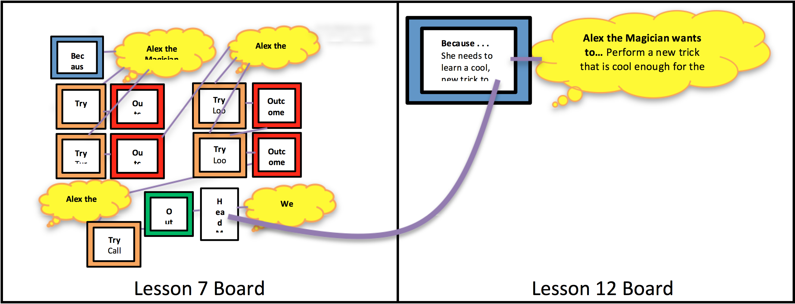

Objectives: Upon completion of the following lesson, students will be able to:
Identify distal causes across multiple events (primary)
Identify important events in a story (primary)
Identify goals, attempts/tries, and outcomes from two perspectives (primary)
Identify inferred goals/attempts for protagonist (review/reinforce)
Students explain/verbalize what events and causes are (review/reinforce)
Students explain/verbalize what goals, attempts, and outcomes are (review/reinforce)
Establish that goals are important to the story
Recall/retell texts using graphic organizers (build working memory strategies)
Materials Needed:
Base Appendix Folders (in Teacher Box):
Sample Procedure Cards (Causal Connections, Goals/Tries/Outcomes, Inference) (see Base Appendix, pp. 1-3)
Identifying Causes and Events Anchor Chart (Base Appendix, p. 4)
Student Goal/Try/Outcome Cards (on tablet or actual cards, see Base Appendix, p. 5)
Goal/Try/Outcome Anchor Chart (for reference only, Base Appendix, p. 6)
How to Place Cards on Goal/Causal Connections Organizer (Base Appendix, p. 7)
Blank Goal/Causal Organizer (Base Appendix, p. 8)
Outcome Prompt Flowchart (Base Appendix, p. 9)
Inference Anchor Chart (Base Appendix, p. 10)
Inference Prompts (Base Appendix, p. 11)
You Do It Together Conversation Starters and Prompts for Small Group Practice (Base Appendix, p. 12)
Small Group Practice Chart (Base Appendix, pp. 13-15)
Gestures Instruction Sheet (for reference only, Base Appendix, pp. 16-17)
Directed Movement Activities (Base Appendix, pp. 18-22) (laminated copies)
Green folder for teacher with Student Evaluation Script (Base Appendix, pp. 25-45)
Green folders with laminated student evaluation chart (6) (Base Appendix, p. 45)
Lesson 12 Appendix (To be printed):
Lesson 12 Magician Narrative Review from Lesson 7 Mastery Sheet (Lesson 12 Appendix, p. 1)
Lesson 12 Magician Narrative Review from Lesson 11 Mastery Sheet (Lesson 12 Appendix, p. 2)
Lesson 12 Magician Narrative Mastery Sheet (Lesson 12 Appendix, p. 3)
Knuffle Bunny Too Mastery Sheet (Lesson 12 Appendix, p. 4)
Student Evaluation Record Sheet (make 2 copies) (Lesson 12 Appendix, pp. 5-6)
Refrigerator Sheet to send home (make 6 color copies) (Lesson 12 Appendix, p. 7)
Technology:
Laptop
Teacher Tablets (2); Student tablet on Demo Mode (1)
Student Tablets (6)
Teacher Box:
Pens (3)
Plastic Cups (6)
Apron
Sharpie
Paperclips
Small Sticky Notes (assorted colors) (6 pads)
Chart Marker
Stickers
Chips for Green Folders (6)
Wet Erase Markers (3)
O-Rings
Wikki Stix
Velcro Boards (4)
Story Creation Bags (set of 12)
Example Bag (1 goal card, 1 try card, 1 outcome fail card, 1 outcome yes card, 1 because card, and 1 because string)
Role Cards (2 sets; I Do, I Help, I Watch, You Do Together, You Help, You Watch)
Role Charts (set of 2)
Procedure Cards (8 sets; 1 goal card, 1 try card, 1 outcome yes card, 1 outcome fail card, 1 procedure card)
Small Group Practice Flip Charts (2)
Videos/PowerPoints Needed:
PowerPoint: Knuffle Bunny Too (1 copy)
Pre-Printed Cards (in Lesson 12 Box):
Lesson 7 Magician Narrative Review
Lesson 11 Magician Narrative Review
Lesson 12 Magician Narrative
Lesson 12 Knuffle Bunny Too (including character card for Trixie)
Boards from Previous Lesson(s):
Lesson 7 Magician Narrative Review (build before the lesson begins)
Additional Materials and Props (in Lesson Box):
Picture of the Head Magician giving a “thumbs-up” sign [Take the photo with the Head Magician wearing her costume and then send the photo to Alex the Magician’s phone to display in the lesson.]
Knuffle Bunnies (2 stuffed rabbits)
Magician Materials (in Magician Box):
Magician Hat (Magician retrieves)
Cape (Magician retrieves)
Checklist (Magician retrieves)
Plastic Cup (Magician retrieves)
3 Napkins/Paper Towels (Magician retrieves)
1 Quarter (Magician retrieves)
Wand (Teacher takes out of Magician Box and puts in classroom to return to the Magician)
Rabbit (Teacher takes out of Magician Box and puts in classroom to return to the Magician)
Lesson 12
Setting Up for the Magician Narrative
Before the lesson begins:
Remove the wand and the rabbit from the Magician Box and put it in the classroom.
You will return those items to Alex the Magician when she comes to the room today.
Building Boards (2) from Previous Lessons:
Before the lesson begins:
Build the Lesson 7 Magician Narrative Review board using the Lesson 7 Magician Narrative Review pre-printed cards, which are in the Lesson 12 box.
Use the Lesson 12: Magician Narrative Review from Lesson 7 Mastery Sheet (Lesson 12 Appendix, p. 1) as a guide when building the board.
Build the Lesson 11 Magician Narrative Review board using the Lesson 11 Magician Narrative Review pre-printed cards, which are in the Lesson 12 box.
Use the wet erase marker to write in TRIES on blank TRY cards.
Use the Lesson 12: Magician Narrative Review from Lesson 11 Mastery Sheet (Lesson 12 Appendix, p. 2) as a guide when building the board.
Materials for Part 1: Review/Explicit Instruction
Goal, Try, and Outcome card (on tablet or actual cards, see Base Appendix, p. 5)
Procedure cards (1 for each child, 1 for each teacher)
1. Review/Explicit Instruction (10 min.)
[Review rules chart by reading rules aloud to the students. Review behavior management system including consequences of not following rules (losing a sticky note and potentially not being able to get a toy at the end of the lesson if they don’t have all of the sticky notes with their name on it). Review how to earn stickers that go in plastic cups.]
Say: “Last time I asked you to find important events when you are reading, watching television, playing games, or in real life. Did you notice any important events while you were at home since our last lesson?”
[Student response]
Say: “Yesterday, I decided to give my puppy a bath. He was really stinky! I turned on the water to run the bath, but I didn’t notice that I had forgotten to close the drain! I went into the bathroom cupboard to find some puppy shampoo. Then I got some towels from the hall closet. Finally, I went to the living room to get my puppy. When I came back there was no water in the tub!”
Say: “WHY did that happen? [make “why” gesture] There was no water in the tub BECAUSE [make finger move] I had forgotten to close the drain. This is an example of a DISTAL cause. One event (forgetting to close the drain) caused another event to happen later (I came back to the bathroom and there was no water in the tub).”
[Explain to students that we will now begin with “I Do/You Help.”]
Say: “We are now going to begin with ‘I Do/You Help.’ [Place these roles onto the Roles Chart.] Sometimes when we are working together, once I think that you are getting the hang of it, I will give you a chance to help me out. We will call this time: ‘I Do/You Help’.” [Point to the “I Do/You Help” on the Roles Chart.]
Say: “When it is time for ‘I Do/You Help,’ I will still be teaching, but you will be able to participate by offering your ideas or helping me figure out the answers. You should still be listening with your ears [point to ears], watching with your eyes [point to eyes], and thinking with your brain [point to brain]. When you have something to add you can let me know by raising your hand [raise hand]. This will help you think and learn the information by participating more—it will also help me to know what you understand and what you still need help on.” [Use Gestures for Explaining Roles in Base Appendix, p. 16.]
Say: “In the last session we learned to identify DISTAL causes and important events. Today we will continue practicing identifying distal causes and important events, and we will also continue practicing identifying goals, tries, and outcomes. We will also still be remembering to ask our WHY questions to understand what caused a character to do something.”
[Use the script below to remind students about declarative, procedural, and conditional knowledge associated with events, causes, goals, tries, outcomes and displaying Goal/Try/Outcome cards.]
[This review should be QUICK and almost game-like. To make it quicker, you should commit the script to memory as much as you can and call on students rather than waiting for them to raise their hands.]
Say: “Let’s review what we have learned so far about EVENTS, CAUSES, GOALS, TRIES, and OUTCOMES. Remember, you can use the procedure card to help you remember.”
Review what events and causes are . . .
Ask: “What is an event?”
[Events are the things that happen in a story.]
Ask: “What question do we ask ourselves to help find the events in a story?”
[What happened?”] [make “what happened” gesture]
Ask: “Sometimes some events cause other events to happen. What is a cause?”
[A cause explains why something happened in a story.]
Ask: “What question do we ask ourselves to find the cause?”
[WHY did this happen?] [make “why” gesture]
Ask: “How do we show causal connections on our Velcro board?” [We show a causal connection using a Because String]
[Hold up procedure card.]
Say: “Remember, you can use these cards to help you remember what events and causes are. We have learned about three kinds of causal connections: (1) a simple cause, where one event causes another event to happen; (2) a causal chain, where one event causes the next which causes the next and so on; and (3) a distal cause where one event causes another event to happen much later.”
[Point to events and Because Strings in each of the causal connection figures on the procedure card while reviewing]
Review how to find the GOAL…
Ask: “What is a goal?”
[Something a character wants to do or get.]
Ask: “When do we find a goal in a story?”
[The beginning of the story.]
Ask: “When we find a goal, what card do we hold up?”
[Tap/hold up your goal card]
[If tablets are available follow the directions in this dark gray box]
[Activate question by tapping the fidelity box to the left.]
[Students should tap on the GOAL card and hold the tablet up]
[Before tapping the ‘Done’ button on the top right of the screen to move on, teachers should double-check to make sure that all students have responded to the question by looking at the list of student responses on the top left.]
[If tablets are NOT available: Have students hold up their goal card.]
Ask: “How do we record the goal on our Velcro board?”
[Record the goal on one of the yellow thought bubbles.]
[Display the sample thought bubble and the goal card].
Ask: “Why do we need to find a goal in a story?” [make “why” gesture]
[Because a goal is the important part of a story. Knowing a goal in a story helps us to remember and understand the story better.]
Review how to find the initiating event using the Because Card.
Ask: “After we figure out the goal, what question do we ask ourselves?”
[Student response: WHY does the character have this goal?] [make “why” gesture]
Say: “This helps us think about what CAUSED the character to have that goal.”
Ask: “How do we record WHY the character had this goal on the Velcro board?”
[On a Because Card]
Ask: “After I write the CAUSE on the blue Because card I put it where?" [Student response: On the Velcro board next to the goal.]
Say: “This will remind us of what CAUSED the character to have the goal. We place this Because Card on the Velcro board [hold up the blue Because Card], and we put it right up here next to the goal.” [Place the blue Because Card to the LEFT of the thought bubble.]
Say: “Since this is a CAUSE, we can connect the blue Because card to what it CAUSED. So, we can use a Because String to connect the blue Because card to the goal.” [Point to the wikki stick connecting the Because card to the thought bubble.]
Next, review finding TRIES:
Ask: “Once we know what a character’s goal is, what do we look for next?”
[What a character did to try to get their goal.]
Ask: “What is a try?”
[Tries are actions/things a character does to try to get what they want/the goal.]
Ask: “When we see a try in the story, what card do we hold up?”
[Tap/hold up your try card]
[If tablets are available follow the directions in this dark gray box]
[Activate question by tapping the fidelity box to the left.]
[Students should tap on the TRY card and hold the tablet up]
[Before tapping the ‘Done’ button on the top right of the screen to move on, teachers should double-check to make sure that all students have responded to the question by looking at the list of student responses on the top left.]
[If tablets are NOT available: Have students hold up their try card.]
Ask: “How do I record the tries on the Velcro board?”
[Write the try on a try card.]
Ask: “What question do we need to ask ourselves after we find a try?”
[WHY did the character try that? / What caused the character to try that?] [make “why” gesture] [Point to the WHY question on the procedure card.]
Say: “When we think about WHY we TRIED something, it means there is a causal connection [make “why” gesture]. What do we use to connect what the character TRIED and WHY they tried it? [A Because string]
Next, review finding OUTCOMES:
Ask: “After we find a try, what do we look for next?”
[What was the outcome of the try?]
Ask: “What is an outcome?”
[An outcome is the result of a try.]
Ask: “What is an outcome fail?”
[The character did not get their goal.]
Ask: “When we see an outcome fail, what card do we hold up?”
[Tap/hold up your outcome fail card.]
[If tablets are available follow the directions in this dark gray box]
[Activate question by tapping the fidelity box to the left.]
[Students should tap on the OUTCOME FAIL card and hold the tablet up]
[Before tapping the ‘Done’ button on the top right of the screen to move on, teachers should double-check to make sure that all students have responded to the question by looking at the list of student responses on the top left.]
[If tablets are NOT available: Have students hold up their outcome fail card.]
Ask: “How do I record an outcome fail on the Velcro board?”
[Write what happened on an outcome fail card.]
Ask: “What is an outcome yes?”
[The character did get their goal.]
Ask: “When we see an outcome yes, what card do we hold up?”
[Tap/hold up your outcome yes card.]
[If tablets are available follow the directions in this dark gray box]
[Activate question by tapping the fidelity box to the left.]
[Students should tap on the OUTCOME YES card and hold the tablet up]
[Before tapping the ‘Done’ button on the top right of the screen to move on, teachers should double-check to make sure that all students have responded to the question by looking at the list of student responses on the top left.]
[If tablets are NOT available: Have students hold up their outcome yes card.]
Ask: “How do I record an outcome yes on the Velcro board?”
[Write what happened on an outcome yes card.]
Ask: “What question do we need to ask ourselves after we find an outcome?” [Why did this outcome happen?] [make “why” gesture] [Point to the WHY question on the procedure card.]
Ask: “When we think about WHY we had an OUTCOME, we are looking for a causal connection. What do we use to connect what the character’s OUTCOME was and WHY they had this OUTCOME?” [A Because string]
Ask: “Once we have found a try and outcome, what question do we ask next?”
[Is the character’s goal still the same?]
Say: “Remember in our previous lessons we also learned how to be DETECTIVES [make spyglass gesture]. Sometimes when we are reading a book or watching a video, the author doesn’t always tell us everything. Then we have to be detectives and look for clues to help us figure things out.”
Inference Gestures
As the teacher is explaining the steps to making inferences, teachers and students should use the corresponding gestures outlined on the procedure card in the Gestures for Making Inferences Instructions (see Base Appendix, p. 17).
Say: “When we are being detectives there are several steps we have to remember. We need to:”
Say: “First we ask, ‘What happened?’” [make “what happened” gesture]
Say: “Then, like a DETECTIVE, we look for ‘clues’ [make spyglass gesture] in the words or in the pictures to help us figure out what happened.”
Say: “Once we identify the clues, then we think [point to brain] about how the clues might relate to one another. This means we have to use our own experiences and what we know to help us think about how the clues might be connected.”
Say: “Then we make a connection [make interlaced finger gesture] to connect the different clues together.”
[Refer students to procedure cards.]
Say: “These cards will help us to remember how to find the goal, tries and outcomes in a story, how to find simple causes, causal chains, distal causes, and how to make inferences. If you need a reminder at any time, or forget a step, you can look at the card and see the steps.”
[Review the steps of finding goals/tries/outcomes with the students using procedure card.]
Say: “In our previous lessons, we have also learned about important events. Remember, some events are more important in a story than other events. An important event is an event in the story that is so big, that without the event, the story would not make sense. Important events are those that have a lot of causal connections. Important events cause many events to happen in the story, and they might be very important in helping the character get his/her goal. Without that important event, a lot would be missing from the story.”
Say: “Remember, the Velcro board can help us to retell a story. We record all the important things in a story, the goals, tries, and outcomes, and then we can look back at them to tell the story again.”
Materials for Part 2: Teacher Modeling/Guided Practice with Magician Narrative
Goal, Try, and Outcome card (on tablet or actual cards, see Base Appendix, p. 5)
Procedure cards (1 for each child, 1 for each teacher)
Lesson 11: Magician Narrative
Lesson 12 Magician Narrative Review from Lesson 7 Mastery Sheet (Lesson 12 Appendix, p. 1)
Lesson 12 Magician Narrative Review from Lesson 11 Mastery Sheet (Lesson 12 Appendix, p. 2)
Lesson 12 Magician Narrative Mastery Sheet (Lesson 12 Appendix, p. 3)
Pre-printed cards: Lesson 7 Magician Narrative Review
Pre-printed cards: Lesson 11 Magician Narrative Review
Velcro boards
Wikki stix
Wet erase marker
Magician’s rabbit and wand to return to her (Teacher takes out of Magician Box to put in classroom)
Magician props: Hat, cape, and checklist (Magician brings)
3 tissues or paper towels, clear plastic cup, and 1 quarter (for Magician’s cup trick; Magician brings)
Picture of a “thumbs-up” gesture on cell phone
Pre-printed cards- Lesson 12 Magician Narrative
Overview of Magician Narrative Activity: (This is just an overview. A script follows.)
Before the lesson begins:
Remove the wand and the rabbit from the Magician Box and put it in the classroom.
You will return those items to Alex the Magician when she comes to the room today.
During the lesson:
Alex the Magician makes her return from the Magician’s conference. She will perform a cool, new trick (the disappearing cup trick).
Boards Needed:
Lesson 7 Magician Narrative Review board (build before the lesson begins)
Lesson 11 Magician Narrative Review board (build before the lesson begins)Lesson
Lesson 12 Magician Narrative board (build during the lesson)
Charting Instructions during the Magician Narrative Activity
Students will display their goal/try/outcome cards when they see one during the activity when Alex the Magician is in the room.
We will NOT chart anything until after Alex the Magician leaves.
2. Teacher Modeling/Guided Practice with Magician Narrative (30 min.)
Say: “Today we will continue learning about events and causes. In particular, we will continue learning about DISTAL causes. Remember, in a distal cause, one event causes another event later on in the story. There can be many events between the event and its cause. We will also continue to look for GOALS, TRIES, and OUTCOMES. So, if you see or hear a GOAL, TRY, or OUTCOME be sure to tap/hold up your cards.”
[Explain to students that we will now continue with “I Do/You Help.”]
Say: “We are now going to continue with ‘I Do/You Help.’ [Place these roles onto the Roles Chart.] That means I’ll be doing some of the talking and explaining, and you all will be helping me out. You will be listening with your ears [point to ears], watching with your eyes [point to eyes], thinking with your brain [point to brain], and raising with your hand [raise your hand].” [Use Gestures for Explaining Roles]
[Bring out the Lesson 11 Magician Narrative Review board and refer to it while saying the following]:
Say: “Last time, Alex the Magician sent us a video message. She asked if we could find her wand that she left when she came to the school to leave the tricks for us. This caused us to try (location 1), which was an outcome fail, BECAUSE [make finger move] we did not find Alex the Magician’s wand. That caused us to try (location 2) where we finally found Alex the Magician’s wand. This was an outcome yes! So, we helped Alex the Magician by finding her wand!”
Say: “I have some good news. Alex is finally back from the Magician’s Conference in Cincinnati, and I believe she learned some cool new tricks. She should be here soon. So, let’s get our tablets/cards ready so that if we see a goal, try, or outcome we can display our cards.”
[Students should get tablets/cards ready]
[If tablets are available follow the directions in this dark gray box]
[The rest of this activity is a free response period. Students can freely respond when they identify a GOAL, TRY, or OUTCOME in the story by tapping the GOAL, TRY, OUTCOME FAIL, or OUTCOME YES cards and holding up their tablet. Teachers can monitor responses by looking at student tablets when they are held up. You should not tap the Done button until the end of this activity.]
[If tablets are NOT available follow directions in this light gray box]
[Students will hold up their GOAL, TRY, OUTCOME FAIL, or OUTCOME YES cards when they feel it is appropriate throughout this activity.]
Charting Instructions
Students will display their goal/try/outcome cards when they see one during the activity, but we will NOT chart anything at this point. We will let Alex the Magician perform her trick once and just be amazed by it.
[At that moment, Alex the Magician bursts through the doors looking very excited.]
Alex the Magician exclaims: “Hey guys! I just got back from The Magician’s Conference in Cincinnati. It was SO AWESOME!! Thanks so much for finding my rabbit and watching it while I was gone!”
Teacher say: “No, problem! We were happy to help! We also wanted to let you know that we found your wand [give Alex the Magician her wand] and here’s your rabbit [give Alex the Magician her rabbit].”
Alex the Magician says: “You guys are awesome! Thank you so much! Now I can check off one of the things I have to do to get back in the Magician’s Club!”
[Alex the Magician pulls out the Magician’s Checklist board and places a check beside “Has all magician equipment.”]
Alex the Magician says: “Now I just have two more things on my list that I have to do to get back into the Magician’s Club. I have to have to get some new magicians to join the club [points to item on checklist], which I thought you guys could help me with, and I have to learn a cool new trick [points to item on checklist].”
Alex the Magician says: “Speaking of doing all of those things on my list…I am so excited! I want to show you a cool new trick that I learned at the Magician’s conference in Cincinnati. I want to see if you think it is cool enough to send to the Magician’s Club to see if I can get back in. Is that okay?”
[Students should tap/hold up a GOAL card.]
Teacher say: “Sure, that sounds great!”
Alex the Magician exclaims: “Thank you so much! I appreciate your help. My new cool trick is that I will make this cup disappear!!
[Pulls cup out of her hat and holds it up to the group.]
Alex the Magician says: “Notice that this is an ordinary cup.”
[Alex displays cup, moves wand about inside the cup, and taps it on the outside to show that it is an ordinary cup.]
Alex the Magician says: “Now, I shall place the cup on the table.”
[Alex places the cup upside down on the table near the edge.]
Alex the Magician says: “To make this cup disappear I will need my magic tissues.”
[Alex pulls 3 Kleenex tissues from her hat with a flourish.]
[Alex the Magician displays the first tissue with a flourish]
Alex the Magician says: “One magic tissue goes around the cup. I will smooth it and smooth it so it won’t come up.”
[Alex the Magician places the first tissue over the cup and continues smoothing it so that the tissue shows the shape of the cup.]
[Alex the Magician displays the second tissue with a flourish]
Alex the Magician says: “A second magic tissue goes around the cup. I will smooth it and smooth it so it won’t come up.”
[Alex the Magician places the second tissue over the cup and continues smoothing it so that the tissue shows the shape of the cup.]
[Alex the Magician displays the third tissue with a flourish]
Alex the Magician says: “A third magic tissue goes around the cup. I will smooth it and smooth it so it won’t come up.”
[Alex the Magician places the third tissue over the cup and continues smoothing it so that the tissue shows the shape of the cup.]
Alex the Magician says: “Now I shall make this cup disappear.”
[Alex grasps tissues and cup.]
Alex the Magician says: “This cup is surrounded by tissues numbering three. I wonder where that cup might be? One [pick tissues and cup up and shake once], two [shake again unobtrusively dropping cup into lap], three [shake again and then smack hand down on top of tissues that look like the cup to reveal that the cup has disappeared].
[Students should tap/hold up a TRY card]
Magician Narrative Instructions
The teachers and children will clap enthusiastically and exclaim that the trick is amazing and very cool.
Teacher says: “Oh my goodness that was an amazing and very cool trick! You will get back into the Magician’s Club for sure with that one!”
Alex the Magician says: “Do you think so? Is it cool enough to get back into the Magician’s Club?” [Student response]
Alex the Magician says: “Great! I’m glad you think so! I’m going to do the trick one more time since you guys think it’s so great.”
[Alex turns to the teacher and asks]
Alex the Magician says: “Would you mind videotaping the trick this time for me on my phone so that I can send it in to The Magician’s Club? Remember, I have to show them that I can perform a cool new trick in order to get back into the club [points to that requirement on the checklist]. It has to be really cool or they won’t let me back in.”
Magician Narrative Instructions
Magician performs trick again while teacher pretends to film it using Alex the Magician’s phone.
Alex the Magician says: “Thank you so much! I’m going to send this video to the Head Magician.”
Magician Narrative Instructions
Alex the Magician pretends to send the video to the Head Magician. Then she immediately gets a response back from the Head Magician that is a picture of the Head Magician giving a “thumbs-up” sign [In the picture that appears on Alex the Magician’s phone, the Head Magician will be wearing her costume and will be giving a “thumbs-up” sign.]
[Students should tap/hold up Outcome Yes card]
Alex the Magician says: “I’m so glad I finally learned a cool new trick that I can perform for the other magicians in the Magician’s Club. It will hopefully help get me back into the Magician’s Club. [Pulls out Magician’s Checklist] Now, thanks to you guys, I have all of my Magician’s equipment including my hat, my cape, my wand and my rabbit, [point to check mark] and I learned a cool new trick [point to check mark]. Now all I need are some new magicians… do you think you would like to be magicians to help me get back into the club?”
[Students should answer yes]
Alex the Magician says: “Oh wonderful! I will come back next time to work on that! For now, I need to go! See you guys later!”
[Alex the Magician leaves]
Say: “Well that was just wonderful! She really seems to have learned a lot at the Magician’s Conference in Cincinnati. Now let’s think about what goals, tries, and outcomes we had in our story today.”
Ask: “What was Alex the Magician’s GOAL today?”
[Student response: Alex the Magician wanted to perform a new trick that was cool enough for the Magician’s Club.]
Ask: “Can someone place the goal on the Velcro board?”
[Student should: Place the yellow goal thought bubble (Alex the Magician wants to perform a new trick that is cool enough for the Magician’s Club) at the top of the Velcro board.]
Ask: “WHY is this her goal?” [make “why” gesture]
[Student response: BECAUSE (make finger move) she needs to learn a cool new trick to get back into the Magician’s Club.]
Ask: “Can someone place the blue BECAUSE card on the Velcro board and make and retell the connection?”
[Student should: Place the blue BECAUSE card (she needs to learn a cool, new trick to get back into the Magician’s Club) to the left of the GOAL.]
[Student should also: Connect the blue BECAUSE card to the GOAL and say, “Alex the Magician wants to perform a new trick that is cool enough for the Magician’s Club BECAUSE [make finger move] she needs to learn a cool new trick to get back into the Magician’s Club.” OR “Alex the Magician needs to learn a cool new trick to get back into the Magician’s Club WHICH CAUSED her to want to perform a new trick that is cool enough for the Magician’s Club.”]
Say: “WHY does she need to learn a cool new trick to get back into the Magician’s Club?” [make “why” gesture]
[Point to the blue Because card.]
[Student response: BECAUSE (make finger move) the Head Magician kicked her out]
Ask: “When did this happen? When did Alex the Magician get kicked out of the Magician’s Club?”
[Student response: A long time ago/Lesson 7/When she lost her rabbit.]
Say: “So, this didn’t happen today. This happened a while ago. Weeks ago even! She got kicked out of the Magician’s Club, and lots of other events have happened since then.”
Say: “So, we really need this board from a few lessons ago. “Because that is when she said she was kicked out of the Magician’s Club.”
[Place the Velcro board from Lesson 7 to the left of the new one.]
Say: “Let’s see if we can make that connection.”
[Student should: CONNECT the blue Because card (She needs to learn a cool, new trick to get back into the Magician’s Club) on the Lesson 12 board to the EVENT card (Head Magician kicks Alex out of the Magician’s Club) on the Lesson 7 board]
Say: “Now let’s retell those connections by starting with today’s goal.”
[Student should say, “Alex the Magician wanted to perform a new trick that was cool enough for the Magician’s Club BECAUSE (make finger move) she needed to learn a cool new trick to get back into the Magician’s Club. She needed to learn a cool new trick to get back in to the Magician’s Club BECAUSE (make finger move) the Head Magician kicked her out.” OR “Alex the Magician was kicked out of the Magician's Club, WHICH CAUSED (make finger move) her to need to learn a cool new trick to get back into the Magician’s Club WHICH CAUSED (make finger move) her to want to perform a trick that was cool enough for the Magician’s Club.”
Ask: “What did she TRY to get her goal?”
[Student response: She performed the disappearing cup trick for the magicians in the Magician’s Club. She made a cup disappear.]
Ask: “Can someone place the TRY on the Velcro board?”
[Student should: Place the TRY under the goal on the Velcro board.]
Ask: “After a TRY, we ask WHY. WHY did she try this?” [make “why” gesture]
[Student response: BECAUSE (make finger move) she wanted to perform a new trick that was cool enough for the Magician’s Club.]
Ask: “Can someone make and retell the connection using a Because string?”
[Student should: Connect TRY and the GOAL with Because String.]
[Student should say: “Alex the Magician tried to perform the disappearing cup trick for the magicians in the Magician’s Club. She tried making a cup disappear, BECAUSE (make finger move) she wanted to perform a new trick that was cool enough for the Magician’s Club.” OR “Alex the Magician wanted to perform a new trick that was cool enough for the Magician’s Club, WHICH CAUSED (make finger move) her to perform the disappearing cup trick for the magicians in the Magician’s Club. She made a cup disappear.”
Ask: “What happened as a result of her try? [make “what happened” gesture]
[Student response: The Magician’s Club texted her and gave her a “thumbs-up.” Outcome Yes.]
Say: “So, what was the OUTCOME? Did Alex the Magician achieve her goal? Did she perform a new trick that was cool enough for the magician’s club?”
[Student response: Yes. It was an outcome yes.]
Ask: “Can someone chart the outcome on the Velcro board?”
[Student should: Place the OUTCOME YES card to the right of the Try card]
Ask: “WHY did this outcome happen?” [make “why” gesture]
[Student response: BECAUSE, (make finger move) she performed the trick and made a cup disappear.]
Say: “Can someone use a Because string to show this connection and retell that connection?”
[Student should: Connect TRY to the OUTCOME YES using Because string and say, “Alex the Magician got a text from the Magician’s Club with a ‘thumbs-up,’ BECAUSE (make finger move) she successfully performed a trick that was cool enough for the Magician’s Club.” OR “Alex the Magician successfully performed a trick that was cool enough for the Magician’s Club, WHICH CAUSED (make finger move) her to get a text from the Magician’s Club with a ‘thumbs-up.’”]
Ask, “ Remember, after we think about WHY we had an OUTCOME we ask ourselves, ‘Is the goal still the same?’ So, is her goal still the same? Does she still need to perform a trick that is cool enough for the Magician’s Club?”
[Student response: No, her goal is not the same. She got a text from the Magician’s Club that was a “thumbs-up.”]
[If tablets are available follow the directions in this dark gray box]
[The free response period is over. Tap the Done button to end the activity.]
Say: “Now that Alex the Magician has achieved her goal of impressing the Magician’s Club by performing a cool new trick, we can use our board to retell what happened in the story.”
[Have students help retell the story using the Velcro board if time permits.]
Ask: “Now let’s think about which events on both boards are most important. Out of all of these events, what would be a really important one? What is an event that, if it hadn’t happened, would have changed the whole story?”
[Students should identify getting kicked out of the Magician’s Club as an important event.]
[Provide additional guidance if needed]
Say: “If Alex the Magician had not gotten kicked out of the Magician’s Club, would any of these other events have happened?”
Say: “To find the most important events in stories, we can ask ourselves, ‘What event if it hadn’t happened would change the whole story?’ or ‘What event caused lots of other events to happen?’ When we figure out what events are most important in a story, it helps us to understand the story better.”
[Provide children with evaluative feedback]
Materials for Part 3: Student Evaluation #1
Tablets (1 for each child, 1 for teacher, 1 for co-teacher)
Student Evaluation Script on teacher tablet (Base Appendix, pp. 25-45)
Backup: Green folders and chips for students (in Teacher Box)
Backup: Student Evaluation Script (Base Appendix, pp. 25-45)
Backup: Student Evaluation Record Sheet (Lesson 12 Appendix, pp. 5-6)
3. Student Evaluation #1 (5 min.)
[If tablets are available follow the directions in this dark gray box]
[Teachers will be able to view student responses on the top left of the teacher tablet. You should remind students to respond if they have not made a response. If necessary, teachers can also remind students to wait for the magic words, ‘Think, Ready, Respond’ before responding. Once all student responses have been recorded, the teacher will tap on the ‘Done’ button on the top right of the screen on the teacher tablet. If the teacher tries to move on to the next question without tapping ‘Done,’ the ‘Done’ button will flash until it is tapped. Co-teachers should circulate to ensure that students are responding to the questions appropriately.]
Directions:
[Distribute student tablets]
Ask Questions:
[The tablets should now display the student response options for DIFFICULTY OF THE ACTIVITY (yellow-colored responses)]
[Teachers should read the following questions aloud to students. After a question is read, and it is time for students to respond, teachers should tap the fidelity box next to the question to activate response mode.]
[Students respond]
[Students respond]
[The tablets should now display the student response options for APPEAL/SATISFACTION (green-colored responses)]
[Teachers should read the following questions aloud to students. After a question is read, and it is time for students to respond, teachers should tap the fidelity box next to the question to activate response mode.]
[Students respond]
[Students respond]
[The tablets should now display the student response options for EFFICACY (pink-colored responses)]
[Teachers should read the following questions aloud to students. After a question is read, and it is time for students to respond, teachers should tap the fidelity box next to the question to activate response mode.]
[Students respond]
Co-teacher will circulate to make sure that students are recording their responses accurately on the tablet.
[Do not collect student tablets. Do not turn them off. Students will use them again after the break.]
[If tablets are NOT available follow directions in this light gray box]
Pass out green folders and chip to each child.
Read each question from p. 39 of the Student Evaluation Script in the Base Appendix orally. Have students mark their responses with their chip.
Co-teacher will record students’ responses on the record sheet on pp. 5-6 of the Lesson 12 Appendix.
Materials for Part 4: Directed Movement Break
Directed Movement Activities (laminated copies)
4. Directed Movement Break
(Co-teacher leads this 5-minute activity while Lead teacher prepares for second half of lesson)
The co-teacher will lead a directed movement break.
After movement break have students come back to the classroom to refocus as a group.
Say: “Today we have been practicing finding distal causes and important events in stories. Remember, a distal cause is when one event in the story causes something else to happen much later. Important events help the character to get their goal, or cause lots of things to happen in the story. Important events in stories are so big that if we were to take them out the story wouldn’t make sense. Can anyone give me an example of an important event or a distal cause from your movement break?”
Materials for Part 5: Guided Practice with Picture Book
Goal, Try, and Outcome card (on tablet or actual cards, see Base Appendix, p. 5)
Procedure cards (1 for each child, 1 for each teacher)
Knuffle Bunny Too Mastery Sheet (Lesson 12 Appendix, p. 4)
Pre-printed cards: Knuffle Bunny, Too (in Lesson 12 box)
PowerPoint: Knuffle Bunny Too (1 copy)
2 stuffed rabbits (in Lesson 12 box)Pre-printed cards- Knuffle Bunny Too
Wet erase marker
Velcro board
Wikki stix
5. Guided Practice with Picture Book Knuffle Bunny Too (Powerpoint) (30 min.)
Activity Overview:
You will do the Pre-reading activity first in which the Teacher and Co-teacher engage in a pretend minor dispute related to 2 stuffed bunnies. You are imitating the issue that Trixie and Sonja experience.
You will read the ENTIRE story to the students before you do any charting.
Events in Knuffle Bunny Two
You will NOT chart all of these events, but will have them available on pre-printed cards so that they can be added to the board if needed. ONLY chart events that students and teachers identify as being most important to the story.
Events that are marked with a single asterisk are considered important events in the story, and can be discussed verbally. Events marked with two asterisks (**) are important and MUST be discussed verbally.
Event: Trixie walked with her daddy to school
Event: She was excited because she got to take her Knuffle Bunny to school
Event: Her daddy kissed her goodbye
Event: She sees Sonja has a Knuffle Bunny too
Event: The girls fight**
Event: The teacher takes away the Knuffle Bunnies**
Because Card: The teacher returns the (wrong) Knuffle Bunnies**
Event: Trixie eats dinner, dessert, brushes her teeth, plays with mommy and daddy
Event: She realizes something*
Event: Tells mommy and daddy “This is not my bunny”
Goal: Trixie wants her Knuffle Bunny back**
Event: Trixie wanted him to deal with it now [inference]
Try 1: Her daddy went to the phone
Event: “We have your bunny”
Event: “We have yours”
Try 2: Rushed across the neighborhood to meet each other
Event: They did not want to be late
Outcome Yes: Switch back Knuffle bunnies**
Event: Trixie finds a best friend
REMINDER: Using the Procedure Card
Prompt students to refer to their procedure cards if they need help.
[Explain to students that we will now continue with “I Do/You Help.”]
Say: “We are now going to continue with ‘I Do/You Help.’ [Place these roles onto the Roles Chart.] That means I’ll be doing some of the talking and explaining, and you all will be helping me out. You will be listening with your ears [point to ears], watching with your eyes [point to eyes], thinking with your brain [point to brain], and raising with your hand [raise your hand].” [Use Gestures for Explaining Roles]
PRE-READING:
Teacher says: “Today, we are going to look at a story called Knuffle Bunny Too, and I have to say, I’m really excited about this book because I have a Knuffle Bunny!” [Pull out Knuffle Bunny]
Co-Teacher looks upset and says: “This is awkward, I brought my ‘KUH-NUFFLE Bunny in today to show the class.”
Teacher says: “Well, it’s pronounced ‘Nuffle Bunny,’ and I brought mine in, and since mine’s the best, you can just put that one away. Mine looks better anyways.”
Co-Teacher says: “Excuse me? My ‘KA-NUFFLE’ bunny is way better! I’ve had it forever!”
Teacher says: “Are you serious…”
Instructions for Fidelity Personnel
If a supervisor is not present during the lesson, whoever is doing fidelity will say the line below and take away the Knuffle Bunnies
[Supervisor interrupts] “Since you guys cannot agree, I’m just going to take these away from you until you both can get along.” [Takes away Knuffle Bunnies] “You can have them back after the story!”
Teacher asks: “Have you ever had a disagreement with a friend that caused you to get in trouble? What happened?”
[Student response]
Teacher says: “Ms./Mr. Co-teacher and I were not actually fighting, but were showing an example of what a disagreement between friends might look like. We will be seeing something like this in the book Knuffle Bunny. We will read the story to see how the author resolves the issue.”
[Explain to students that we will now be switching to “I Do/You Watch.”]
Say: “We are now going to switch to ‘I Do/You Watch.’ [Place these roles onto the Roles Chart.] That means I’ll be doing the talking and explaining what’s going on in my head. You will be listening with your ears [point to ears], watching with your eyes [point to eyes], thinking with your brain [point to brain], and at the end raising with your hand [raise your hand] if you have any questions.” [Use Gestures for Explaining Roles]
Say: “Most of the time we listen for goals, tries and outcomes while we are reading. We will do that today too, but this story is a little different. The goal is not obvious in the beginning of the story. So, today we will just read the whole story FIRST. As you listen you should try to think about what the Trixie’s GOAL is and what she TRIES to do to get her goal, and what the OUTCOME of that goal is. You can tap/hold up your GOAL, TRY, and OUTCOME cards, but we will chart those goals, tries, and outcomes at the end though.”
[Begin reading story. You will read the ENTIRE story to the students before you do any charting.]
[If tablets are available follow the directions in this dark gray box]
[The rest of this activity is a free response period. Students can freely respond when they identify a GOAL, TRY, or OUTCOME in the story by tapping the GOAL, TRY, OUTCOME FAIL, or OUTCOME YES cards and holding up their tablet. Teachers can monitor responses by looking at student tablets when they are held up. You should not tap the Done button until the end of this activity.]
[If tablets are NOT available follow directions in this light gray box]
[Students will hold up their GOAL, TRY, OUTCOME FAIL, or OUTCOME YES cards when they feel it is appropriate throughout this activity.]
[Begin reading SLIDES 1-11]:
[Read SLIDE 1]: Knuffle Bunny Too by Mo Willems
[Read SLIDE 2]: One morning, not so long ago, Trixie took a walk with her daddy. By now, Trixie really knew how to talk.
[Read SLIDE 3]
: Trixie was excited because she was taking her one-of-a-kind Knuffle Bunny someplace very special…
“C’mon”
[Read SLIDE 4]: school!
[Read SLIDE 5]: Trixie couldn’t wait to show Knuffle Bunny to Ms. Greengrove and all her friends in Pre-K.
[Read SLIDE 6]: But just as her daddy kissed her good-bye. Trixie saw Sonja.
[Read SLIDE 7]: No text. Look at pictures. Say: “Oh wow! Sonja has a Knuffle Bunny just like Trixie’s!”
[Read SLIDE 8]: Suddenly, Trixie’s one-of-a-kind Knuffle Bunny wasn’t so one-of-a-kind anymore.
[Read SLIDE 9]: The morning did not go well.
[Read SLIDE 10]: The afternoon was worse
[Read SLIDE 11] : When the school bell rang, Ms. Greengrove returned the Knuffle Bunnies.
STOP READING
Say: “The story doesn’t say it exactly, but look at this picture on Slide 11. Do you notice anything?”
[Student response]
Say: “It looks to me as if the girls aren’t getting back the same Knuffle Bunnies! The teacher accidently switched them! I wonder how long it will take the girls to notice.”
[Continue reading SLIDES 12-19]
[Read SLIDE 12]: And the day got better.
[Read SLIDE 13]: Then, before she knew it, it was time to go home.
[Read SLIDE 14]: Trixie “ate” her dinner. Devoured her dessert, brushed her teeth…
[Read SLIDE 15]: and tried to escape the Mommy and Daddy robots from planet Snurp!
[Read SLIDE 16]: At half-past bedtime, Trixie was tucked in, ready for sleep.
[Read SLIDE 17]: But a few hours later… Trixie realized something.
[Read SLIDE 18]: Trixie marched into her mommy and daddy’s room and said:
[Read SLIDE 19]: “That is not my bunny.”
STOP READING
[Continue reading SLIDE 20-30 (to the end)]
[Read SLIDE 20]: Trixie’s daddy went to the phone.
[Read SLIDE 21]: Before he even made it down the stairs, The phone rang. (BRIIINNNGGG!)
[Read SLIDE 22]: “We have your bunny,” said a man’s voice on the other end.
[Read SLIDE 23]: “We have yours,” replied Trixie’s daddy.
[Read SLIDE 24]: Arrangements were made.
[Read SLIDE 25]: Trixie and her daddy rushed across the neighborhood!
[Read SLIDE 26]: Trixie did not want to be late.
[Read SLIDE 27]: Neither did Sonja.
[Read SLIDE 28]: There was an exchange.
[Read SLIDE 29]: And the Knuffle Bunnies were back where they belonged.
[Read SLIDE 30] : And that is how Trixie found her first best friend.
STOP READING
[Explain to students that we will now be switching to “I Do/You Help.”]
Say: “We are now going to switch to ‘I Do/You Help.’ [Place these roles onto the Roles Chart.] That means I’ll be doing some of the talking and explaining, and you all will be helping me out. You will be listening with your ears [point to ears], watching with your eyes [point to eyes], thinking with your brain [point to brain], and raising with your hand [raise your hand].” [Use Gestures for Explaining Roles]
Charting the Story
Have students help you identify the goals, tries, outcomes, and causal connections that happen in the story. The students will place the pre-printed goal, try, and outcome cards on the Velcro board and state the causal connections.
Say: “Now that we have read the story. Let’s think about, and chart, the goals, tries, and outcomes. As we chart, you should (tap/hold) up your GOAL, TRY, and OUTCOME cards when you notice one happening in the story so I know what you are thinking.”
Say: “Now that we have finished reading the whole story let’s think about what GOAL you saw? What did Trixie [place the character card on the Velcro board] want to do or get?”
[Student response: Trixie wants to get her Knuffle Bunny back.] Place pre-written goal card on Velcro board.
[Students should tap/hold up GOAL cards]
Ask: “Can someone place the goal on the Velcro board?”
[Student should: Place the yellow goal thought bubble (Trixie wants to get her Knuffle Bunny back) at the top of the Velcro board.]
Say: “Now we have to ask ourselves what question?”
[Student response: Why]
Say: “Right, WHY does Trixie have this GOAL?” [make “why” gesture]
[Student response: BECAUSE (make finger move) the teacher accidentally switched the bunnies.]
Ask: “Can someone place the blue BECAUSE card on the Velcro board and make and retell the connection?”
[Student should: Place the blue BECAUSE card (The teacher accidentally switched the bunnies) to the left of the GOAL.]
[Student should also: Connect the blue BECAUSE card to the GOAL and say, “Trixie wants to get her Knuffle Bunny back BECAUSE (make finger move) the teacher accidentally switched the bunnies.” OR “The teacher accidentally switched the bunnies WHICH CAUSED Trixie to want to get her Knuffle Bunny back.”]
Charting Trixie’s Try
Students may or may not spontaneously identify using the phone as a try. If they DO identify this try, use the script below to guide them to identify WHY she tried this and what her outcome was. If they DON’T spontaneously identify this try, there is no need to chart.
Ask: “Now that we found Trixie’s goal. What do we look for next? What does Trixie TRY to get her goal?”
[Students should tap/hold up TRY cards]
[Optional TRY 1: to use the phone]
Ask: “Can someone place the TRY on the Velcro board?”
[Student should: Place the TRY (use the phone) under the goal on the Velcro board.]
[Place pre-printed TRY 1 card on Velcro board ONLY if students notice this TRY. If they don’t just ignore it.]
[Only do this part if students identified TRY 1 above:]
Ask: “Now we have to think about what?
[Student response: Why]
Say: “Right, we have to think about WHY they TRIED this?” [make “why” gesture]
[Student response: BECAUSE Trixie wants her Knuffle Bunny back.]
Ask: “Can someone make and retell the connection using a Because string?”
[Student should: Connect TRY #1 and the GOAL with Because String and say, “Trixie’s Dad used the phone BECAUSE (make finger move) Trixie wants to get her Knuffle Bunny back.” OR “Trixie wants to get her Knuffle Bunny back, WHICH CAUSED Trixie’s Dad to use the phone.”]
[Only do this part if students identified TRY 1 above:]
Say: “After we see a TRY we have to think about what?”
[Student response: the outcome]
Say: “Right, we think about the outcome. What happened as the result of this TRY? What happened?” [make “what happened” gesture]
[Student response: They made a plan to meet, but they didn’t really get the goal]
Say: “So, what was the OUTCOME? Did Trixie achieve her goal after her Dad used the phone? Did she get her Knuffle Bunny back?”
[Student response: No. It was an outcome fail.]
Ask: “Can someone chart the outcome on the Velcro board?”
[Student should: Place the OUTCOME FAIL card to the right of the Try #1 card]
Ask: “Why did this outcome happen?” [make “why” gesture]
[Student response: BECAUSE (make finger move) her Dad called Sonja’s Dad.]
Say: “Can someone use a Because string to show this connection and retell that connection?”
[Student should: Connect TRY #1 (use the phone) to the OUTCOME FAIL (made plans to meet) using Because string and say, “They made plans to meet BECAUSE (make finger move) Trixie’s Dad used the phone to call Sonja’s Dad.” OR “Trixie’s Dad used the phone to call Sonja’s Dad, WHICH CAUSED them to make plans to meet.”]
[Only do this part if students identified TRY 1 above:]
Say: “Now what do we think about?”
[Student response: Is the goal still the same?]
Say: “Right, we think about whether their goal is still the same? Does Trixie still want to get her Knuffle Bunny back?”
[Student response: Yes]
Say: “Yes, she still wants to get her Knuffle Bunny back.”
[Only do this part if students identified TRY 1 above:]
Say: “So, what do we think about next?”
[Student response]
Say: “Yes, we think about what they tried to get their goal.”
Say: “Did Trixie TRY anything else to get her goal?”
[Student response: They rushed across the neighborhood to meet each other and switch bunnies.]
Ask: “Can someone place the TRY on the Velcro board?”
[Student should: Place TRY #2 (rushed across the neighborhood to switch bunnies) under the goal on the Velcro board.]
Say: “What do we think about after we find a TRY?”
[Student response: Why]
Say: “Yes, we think about WHY did they TRY this?” [make “why” gesture]
[Student response: BECAUSE Trixie wants to get her Knuffle Bunny back.]
Ask: “Can someone make and retell the connection using a Because string?”
[Student should: Connect TRY #2 and the GOAL with Because String and say, “They rushed across the neighborhood to switch bunnies BECAUSE (make finger move) Trixie wants to get her Knuffle Bunny back.” OR “Trixie wants to get her Knuffle Bunny back, WHICH CAUSED (make finger move) them to rush across the neighborhood to switch bunnies.”]
Say: “After we think about WHY the characters made that try what do we think about?”
[Student response: the outcome]
Say: “Yes, we think about what happened as a result of this try? What happened?” [make “what happened” gesture]
[Student response: They switched back the Knuffle Bunnies/Outcome YES] place pre-printed outcome yes card on Velcro board
Say: “So, what was the OUTCOME? Did Trixie achieve her goal? Did she get her Knuffle Bunny back?”
[Student response: Yes. It was an outcome yes.]
Ask: “Can someone chart the outcome on the Velcro board?”
[Student should: Place the OUTCOME YES card to the right of the Try #2 card]
Say: “Now that we have found an outcome what do we think about next?”
[Student response: Why]
Say: “Yes, we think about WHY did this outcome happen?” [make “why” gesture]
[Student response: BECAUSE they rushed through the neighborhood.]
Say: “Can someone use a Because string to show this connection and retell that connection?”
[Student should: Connect TRY #2 (rushed across the neighborhood to switch bunnies) to the OUTCOME YES using Because string and say, “They switched back the Knuffle Bunnies BECAUSE (make finger move) they rushed across the neighborhood to switch bunnies.” OR “They rushed across the neighborhood to switch bunnies, WHICH CAUSED (make finger move) Trixie to get her Knuffle Bunny back.”]
Say: “Now what do we think about?
[Student response: Is the goal still the same?]
Say: “Right, we think about whether Trixie’s goal is still the same, Does Trixie still want her Knuffle Bunny back?”
[Student response: No, she got it back.]
Say: “Right, she doesn’t have the same goal because she got her real Knuffle Bunny back.”
[If tablets are available follow the directions in this dark gray box]
[The free response period is over. Tap the Done button to end the activity.]
Say: “Wonderful! You have identified the goal, tries, and outcomes. Good job! Now we can begin to think about important events. Remind me of what an important event is again?”
[Student response]
Say: “Right, an important event is an event in the story that is so big, that without the event, the story would not make sense. Important events are those that have a lot of causal connections. Important events cause many events to happen in the story, and they might be very important in helping the character get his/her goal. Without that important event, a lot would be missing from the story.”
Say: “Okay, now let’s think about what events in the story might be really important. Which events that we have on our Velcro Board seem to be important?”
[Student response]
[At a minimum, you should discuss the following events]:
Because Card: The teacher returns the (wrong) Knuffle Bunnies**
Goal: Trixie wants her Knuffle Bunny back**
Outcome Yes: Switch back Knuffle bunnies**
Ask: “Why do those events seem important?” [Student response]
[If the event and rationale are reasonable]:
Say: “Can someone put a swirly string on that card to show that it is the most important event?”
[Swirl a wikki stick and have a student place on the card]
Ask: “Why do those events seem important?” [Student response]
Say: “Sometimes there are also important events that were not goals, tries, or outcomes. Let’s think about other events, or things that happened in the story that were pretty important that might not be on our Velcro board yet. What might some of these events be?”
[Student response]
[There are additional event cards in the box than what is charted on the board. Add these event cards to the board. The following events should be discussed]:
Event: The girls fight**
Event: The teacher takes away the Knuffle Bunnies**
Event: She realizes something*
Ask: “Why do those events seem important?” [Student response]
[If the event and rationale are reasonable]:
Say: “Can someone put a swirly string on that card to show that it is the most important event?”
[Swirl a wikki stick and have a student place on the card]
Teacher Prompts for Identifying and Charting Important Events
As students identify important events, the teacher will use the following prompts to follow up.
Why do you think that event is important? [Student response.]
How can you tell that event is important? [Student response: Because it caused a lot of other events to happen, or because the story wouldn’t make sense without it.]
If students select a non-important event, the teacher will use the following prompts:
What would happen if we took this event out of the story? Would these other events still have happened?
What other events did this cause?
If students identify important events that are not already on the board, place pre-printed event cards on the board and have students make causal connections using Because Strings.
As students make connections between the important events and other events in the story, have them restate the causal connections by saying “Because” or “Which Caused.”
[If time permits]
Say: “Now let’s use the parts of the organizer that we charted to retell the story. Be sure to state the connections as well as the goal, tries, and outcomes.”
[Have students work together to retell the beginning of the story using the completed organizer.]
[Pay special attention to causal connections that connect back to Blue Because card]
[Provide evaluative feedback on the students’ performance and behavior.]
Materials for Part 6: Student Evaluation #2
Tablets (1 for each child, 1 for teacher, 1 for co-teacher)
Student Evaluation Script on teacher tablet (Base Appendix, pp. 25-45)
Backup: Green folders and chips for students (in Teacher Box)
Backup: Student Evaluation Script (Base Appendix, pp. 25-45)
Backup: Student Evaluation Record Sheet (Lesson 12 Appendix, pp. 5-6)
6. Student Evaluation #2 (5 min.)
[If tablets are available follow the directions in this dark gray box]
[Teachers will be able to view student responses on the top left of the teacher tablet. You should remind students to respond if they have not made a response. If necessary, teachers can also remind students to wait for the magic words, ‘Think, Ready, Respond’ before responding. Once all student responses have been recorded, the teacher will tap on the ‘Done’ button on the top right of the screen on the teacher tablet. If the teacher tries to move on to the next question without tapping ‘Done,’ the ‘Done’ button will flash until it is tapped. Co-teachers should circulate to ensure that students are responding to the questions appropriately.]
Directions:
[Distribute student tablets]
Ask Questions:
[The tablets should now display the student response options for DIFFICULTY OF THE ACTIVITY (yellow-colored responses)]
[Teachers should read the following questions aloud to students. After a question is read, and it is time for students to respond, teachers should tap the fidelity box next to the question to activate response mode.]
[Students respond]
[Students respond]
[The tablets should now display the student response options for APPEAL/SATISFACTION (green-colored responses)]
[Teachers should read the following questions aloud to students. After a question is read, and it is time for students to respond, teachers should tap the fidelity box next to the question to activate response mode.]
[Students respond]
[Students respond]
[The tablets should now display the student response options for EFFICACY (pink-colored responses)]
[Teachers should read the following questions aloud to students. After a question is read, and it is time for students to respond, teachers should tap the fidelity box next to the question to activate response mode.]
[Students respond]
Co-teacher will circulate to make sure that students are recording their responses accurately on the tablet.
[Collect student tablets]
[If tablets are NOT available follow directions in this light gray box]
Pass out green folders and chip to each child.
Read each question from p. 39 of the Student Evaluation Script in the Base Appendix orally. Have students mark their responses with their chip.
Co-teacher will record students’ responses on the record sheet on pp. 5-6 of the Lesson 12 Appendix.
Materials for Part 7: Closure
Refrigerator Sheet to send home (make 6 color copies) (Lesson 12 Appendix, p. 7)
If students start packing up:
Students may try to get up or start packing their things during the wrap-up. If so they should be instructed that (1) the lesson is not over yet, (2) our group rules still apply, and (3) the teacher will let them know when it is time for them to pack up their things.
7. Closure (5 min.)
Pass out refrigerator sheets to students and have them follow along as you review the information.
Say: “Today we practice finding distal causes and important events in stories. Remember, a distal cause is when one event in the story causes something else to happen much later. Important events help the character to get their goal, or cause lots of things to happen in the story. Important events in stories are so big that if we were to take them out the story wouldn’t make sense. In Knuffle Bunny Too, the teacher giving the girls back the wrong bunnies caused something else to happen much later in the story—the girls became friends! This is an example of a distal cause. The teacher switching the bunnies is also an example of an important event, because if that wouldn’t have happened the story would be completely different!”
Say: “When you go home tonight try to find distal causes and important events when you are reading, watching television, playing games, or in real life. We will share the distal causes and important events that we notice the next time we meet.”
[Be sure to exit the session by tapping the red “EXIT” button at the top right of your tablet. On the next screen (on the main menu) tap the red “MARK SESSION AS FINISHED” button to be sure the data are downloaded.]